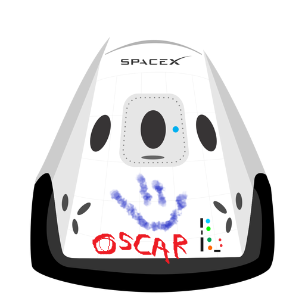

Hyperblog
Tu blog de cabecera
Este es el título atractivo e interesante del post
Y este es el párrafo de inicio donde vamos a explicar las cosas increíbles que se pueden hacer con ramas.

Los blogs son la mejor forma de compartir información y tus ideas. Mucho más que ir a conferencias o salir en Youtube. Excepto si eres un Rockstar. Pero estadísticamente no lo eres...por ahora xd. Añado este texto de esta nueva cabecera para hacer merge con main.
¡Suscríbete y dale a seguir papu!